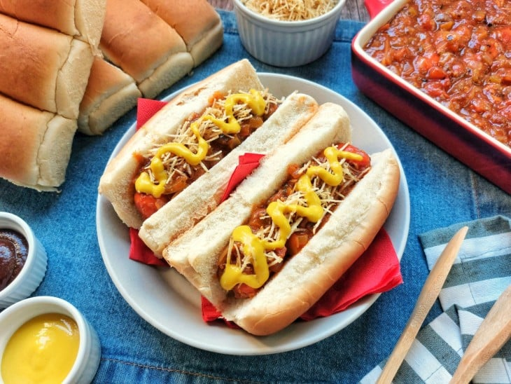

Cachorro quente (10 porções)

10 minutos
Voltar
Ingredientes:
- 3 colheres de sopa de óleo
- 1 cebola média cortada em cubos
- 2 dentes de alho amassados
- 1 pimentão verde pequeno cortado em cubos/li>
- 1 tomate médio cortado em cubos
- 1 colher de chá de colorau
- 1 colher de chá rasa de sal
- 2 colheres de sopa de coentro (ou salsa picada)
- 1/2 colher de chá de pimenta-do-reino
- 1 colher de chá de páprica defumada
- 1 caldo de carne ou bacon (opcional)
- 1 sachê ou 340 gramas de molho de tomate
- 1 xícara de chá de água
- 10 salsichas
- 10 pães de sua preferência
- Batata palha, ketchup e mostarda a gosto
Como fazer Cachorro quente:
- Reúna todos os ingredientes
- Em uma panela, coloque o azeite e a cebola. Refogue brevemente e acrescente os alhos amassados. Mexa rapidamente
- Acrescente o pimentão e o tomate e refogue por cerca de 2 minutos
- Adicione o colorau, sal, coentro, pimenta-do-reino, páprica defumada e, se quiser, o caldo de carne ou bacon
- Depois que tudo estiver refogado, coloque o molho de tomate, a água e as salsichas. Deixe cozinhar em fogo médio para baixo por cerca de 15 minutos
- Agora é só cortar o pão ao meio, colocar o molho com salsicha e se deliciar